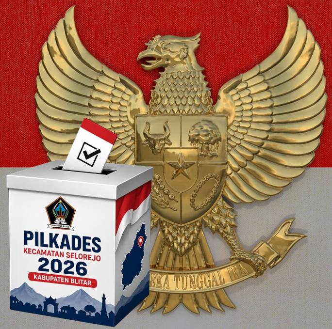
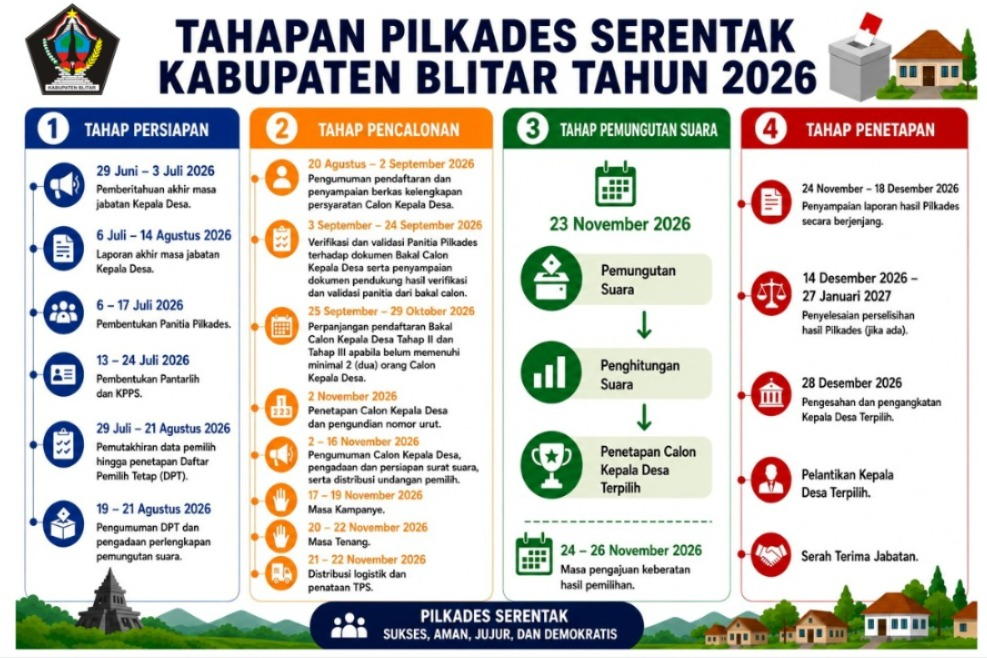
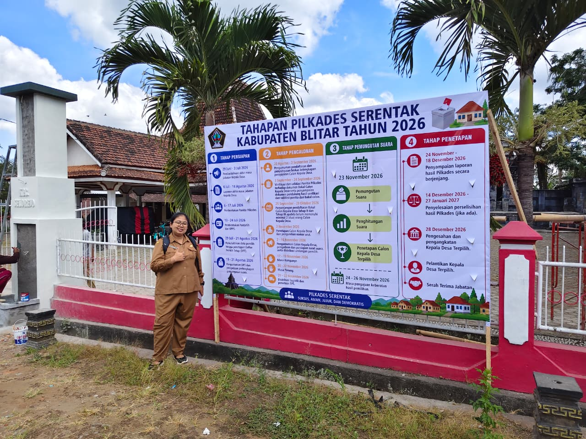
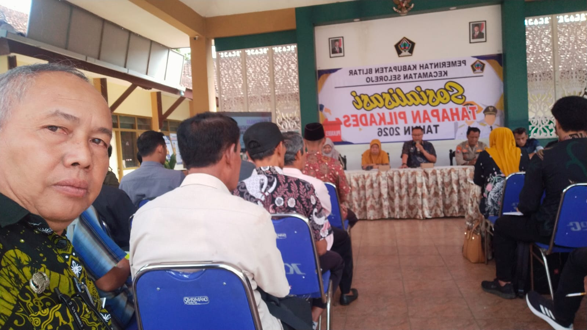

Desa Sidomulyo
Desa dengan potensi pertanian, perkebunan dan masyarakat yang aktif dalam pembangunan desa.
- Kecamatan Selorejo
- Pelaksanaan Pilkades 2026
Menuju Pemilihan Kepala Desa Serentak Tahun 2026 Kabupaten Blitar

Pelaksanaan Pilkades
Menuju Hari Pemungutan Suara
Pemilihan Kepala Desa Serentak Tahun 2026 merupakan pelaksanaan demokrasi di tingkat desa untuk memilih kepala desa yang akan memimpin penyelenggaraan pemerintahan desa secara langsung, umum, bebas, rahasia, jujur dan adil.
Pelaksanaan Pilkades mengacu pada peraturan perundang-undangan yang berlaku serta ketentuan Pemerintah Kabupaten Blitar.
Langsung, Umum, Bebas, Rahasia, Jujur dan Adil (LUBER JURDIL).
Memilih Kepala Desa yang amanah, profesional, transparan dan mampu membawa kemajuan desa.
Tiga desa di Kecamatan Selorejo yang melaksanakan Pilkades Serentak Tahun 2026.
Desa dengan potensi pertanian, perkebunan dan masyarakat yang aktif dalam pembangunan desa.

Desa dengan wilayah yang luas, memiliki potensi pertanian dan wisata alam.

Desa dengan masyarakat yang dinamis serta memiliki potensi pertanian dan UMKM.
Jadwal pelaksanaan Pemilihan Kepala Desa Serentak Kecamatan Selorejo.
Pembentukan Panitia Pilkades oleh BPD.
Penerimaan berkas administrasi bakal calon kepala desa.
Penetapan calon kepala desa yang memenuhi persyaratan.
Penyampaian visi, misi dan program kerja calon.
Senin Wage
23 November 2026
Penetapan calon terpilih sesuai ketentuan.
Informasi terbaru seputar Pilkades Serentak 2026.

Sosialisasi kepada seluruh pemangku kepentingan mengenai pelaksanaan Pilkades 2026.
Selengkapnya
Tahapan demi tahapan akan diumumkan melalui portal resmi ini.
Selengkapnya
Dasar hukum penyelenggaraan Pilkades Serentak.
Dokumentasi kegiatan Pemilihan Kepala Desa Serentak Kecamatan Selorejo Tahun 2026.


Informasi resmi Portal Pilkades Kecamatan Selorejo.
Kecamatan Selorejo
Kabupaten Blitar
Jawa Timur
(Isi Nomor Kantor)
(Isi Email Kecamatan)
Portal Pilkades 2026